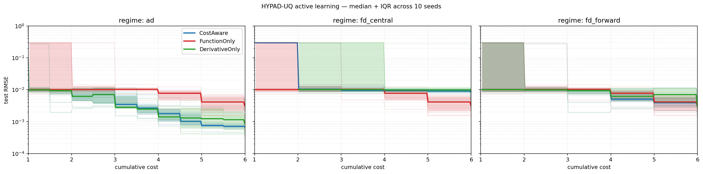

HYPAD-UQ Learning Curves Under Three Differentiation-Cost Regimes#
Overview#
This example extends Budgeted Cost-Aware Policy Comparison from synthetic costs on the Branin-Hoo problem to a realistic cost-of-differentiation model on the HYPAD-UQ heated fin (7-dimensional, Case 1 inputs — standard normal in z-space). Rather than reporting a final RMSE at a single budget, every run records its full cost-vs-error trajectory so we can read off
which policy is best at which budget level, and
whether the cost-aware policy Pareto-dominates the single-modality baselines across the whole budget range.
The headline figure is the (cumulative cost, test RMSE) learning curve, with shaded bands showing seed-to-seed variation.
—
Cost Regimes#
We anchor the three regimes in the physics of obtaining a directional derivative rather than picking the costs arbitrarily:
Regime |
|
|
Justification |
|---|---|---|---|
|
1.0 |
0.5 |
Automatic differentiation / OTI — derivative obtained alongside the function value at modest extra arithmetic cost. |
|
1.0 |
1.0 |
Forward finite differences at an existing point: |
|
1.0 |
2.0 |
Central finite differences: two perturbed evaluations per directional derivative. Strictly more expensive than a fresh function call. |
All three regimes share the same budget B = 6.0 and the same initial DOE
(6 points, fixed seed-wise across policies). Each policy runs up to 20
iterations or until the budget is exhausted, whichever comes first.
—
Policies#
The three policies share the AdaptiveDirectionalGP machinery; only the
allowed candidate set differs.
class CandidateFilteredAdaptiveGP(AdaptiveDirectionalGP):
allowed_kind = None
def _build_cost_aware_candidates(self):
candidates = super()._build_cost_aware_candidates()
if self.allowed_kind is None:
return candidates
return [c for c in candidates if c.kind == self.allowed_kind]
class FunctionOnlyAdaptiveGP(CandidateFilteredAdaptiveGP):
allowed_kind = "f"
class DerivativeOnlyAdaptiveGP(CandidateFilteredAdaptiveGP):
allowed_kind = "d"
All three use PDF-weighted MPV (find_next_point_weighted_mpv) for the
function-candidate stage, and the input log-PDF case1_log_pdf to weight
the cost-aware score of both function and derivative candidates. This
ensures the comparison reflects test-distribution-aware active learning
rather than uniform exploration of the input box.
—
Results#
The figure shows median test RMSE versus cumulative cost across 10 seeds, per policy, per regime. Shaded bands indicate the 25th–75th percentile range; faint lines are individual seed trajectories.
{kind=link}

The 10-seed summary at the end of each run:
Regime |
Policy |
RMSE median |
RMSE IQR |
Avg |
Avg |
|---|---|---|---|---|---|
|
CostAware |
6.9e-4 |
[6.2e-4, 8.3e-4] |
1.1 |
9.8 |
|
FunctionOnly |
3.0e-3 |
[2.2e-3, 4.1e-3] |
6.0 |
0.0 |
|
DerivativeOnly |
8.6e-4 |
[3.9e-4, 1.2e-3] |
0.0 |
12.0 |
|
CostAware |
3.2e-3 |
[2.6e-3, 4.6e-3] |
0.7 |
5.3 |
|
FunctionOnly |
3.0e-3 |
[2.2e-3, 4.1e-3] |
6.0 |
0.0 |
|
DerivativeOnly |
2.8e-3 |
[2.6e-3, 6.4e-3] |
0.0 |
6.0 |
|
CostAware |
8.2e-3 |
[3.6e-3, 9.7e-3] |
1.4 |
2.3 |
|
FunctionOnly |
3.0e-3 |
[2.2e-3, 4.1e-3] |
6.0 |
0.0 |
|
DerivativeOnly |
9.3e-3 |
[7.3e-3, 9.8e-3] |
0.0 |
3.0 |
A useful sanity check is that FunctionOnly’s final RMSE is identical
across regimes (3.0e-3): the function-only policy is invariant to c_d,
and the data confirm it.
—
Interpretation#
The cost-aware policy’s value depends on the cost of differentiation:
AD/OTI regime (``c_d = 0.5 c_f``). The cost-aware policy and the derivative-only baseline both substantially outperform plain function-only MPV — roughly 4× lower median RMSE in the same budget. The cost-aware mix gives a slightly tighter median RMSE; the derivative-only policy gives a tighter best case (lower IQR floor). This is the regime in which JetGP’s cost-aware framework is designed to be deployed.
Forward-FD regime (``c_d = c_f``). All three policies are within IQR overlap of one another — the comparison is approximately a tie. The cost-aware policy still mixes
fanddobservations sensibly (typical sequence: 0.7 f + 5.3 d), but the resulting test-RMSE benefit vanishes at parity costs.Central-FD regime (``c_d = 2 c_f``). Function-only MPV is the clear winner. Spending budget on derivatives at 2× the cost is not justified by the information they provide under greedy local scoring.
The cost-aware policy is therefore best understood as a principled framework for combining heterogeneous observation types, whose empirical advantage over single-modality baselines holds when derivative information is cheaper than function evaluations. With finite-difference derivatives, plain MPV on function values is a strong and robust default.
—
Known Limitations#
Local greedy scoring vs test-error reduction. The cost-aware
acquisition score maximises (normalised) posterior-variance reduction per
unit cost at the candidate point. This is correlated with — but not
identical to — reduction in test RMSE. The gap is small when the input
distribution has a well-defined density gradient (Case 1) and the cost
asymmetry is favourable (ad regime); it can become large for input
distributions with flat-density marginals (Case 2 of the HYPAD-UQ benchmark
exhibits a degenerate concentration of derivative picks at boundary anchors).
Closing this gap rigorously would require switching from local
variance-reduction scoring to an integrated mean-squared-error (IMSE) or
predictive-variance-reduction (PVR) criterion over a Monte-Carlo
representation of the test distribution. This is documented as a planned
extension.
—
Reproducing the Figure#
The experiment script and plotter live in active_learning/:
# 10 seeds, three regimes, three policies — ~10 minutes
python active_learning/hypad_learning_curves.py --n-seeds 10 --n-iter 20
# Render the median + IQR figure
python active_learning/plot_hypad_learning_curves.py
# Print the summary table
python active_learning/summarize_hypad_learning_curves.py
Outputs:
active_learning/data/hypad_learning_curves.json— per-seed trajectories.docs/source/_static/hypad_learning_curves.png— headline figure.